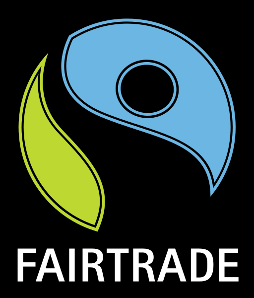

English Project
by , and

Fair Trade Text
Other Texts

by , and
by Chinese refugees in Oxfam shops

The very beginning of the fair trade movement was in the 1960s. It wasn’t until the 1990s that a Fairtrade Mark was created and a series of required ‘standards’ were set out. Fairtrade wanted to improve the conditions under which the workers have to work, community facilities and a fair pay for certain farmers and workers.
The Fairtrade ‘standards’ are a detailed list of things that need to be achieved before products can be classified as Fairtrade goods. They include things like fair pay. The aim of having these standards is to ensure that costs are covered and that there is a bit of money as well to invest in local community projects. The Fairtrade standards also exist to make sure that the conditions people work under are acceptable and fair.
The first product to be classified as Fairtrade was Maya Gold chocolate in 1994. Since then there have been many more things added to the Fairtrade Mark, including coffee, tea, chocolate, sugar, honey, fruits (for example, bananas, mangoes, pineapples), flowers, gold, silver and cotton.
Some people have argued that Fairtrade has a negative effect on what is called the ‘free market’, where products are produced when they are needed and farms can grow different crops as well as use new mechanical equipment, if the demand for their product increases. Fairtrade doesn’t always help encourage this.